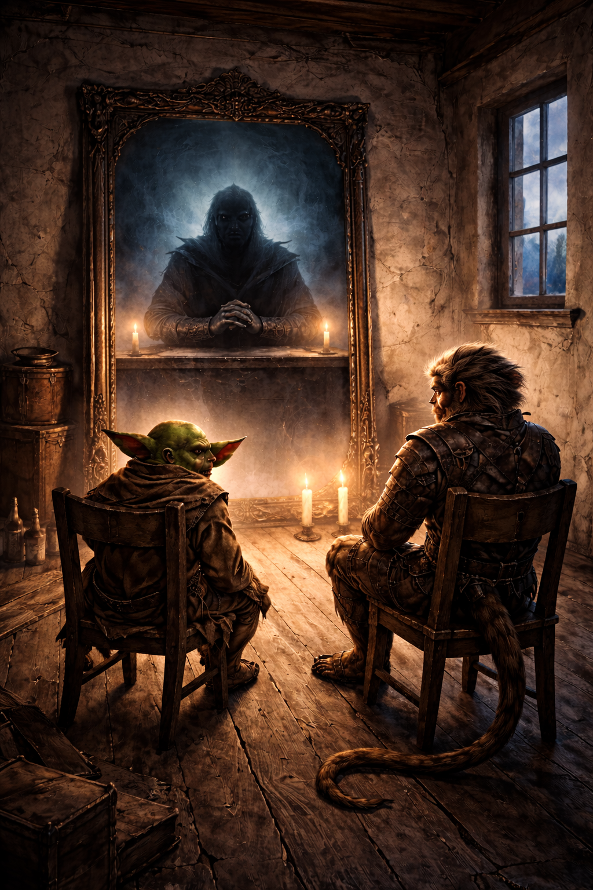

The Better Offer

The letter sat overnight. That alone says something.
The party split to learn what they could. Croakelion sought counsel at the church of Savus and received a vision, danger ahead, but something worth the cost. Mai-amar went to his adoptive mother Wilson, but she knew nothing beyond what Cliff had already shared. Sticky and Bannanas returned to the tavern and met Trevor, whose friend Jose had taken work from the Collector. Good money. Real danger.
The Chandler's shop led them upstairs to a rented room, two chairs, a large mirror, and nothing else. Robyn the chandler had never met her tenant. Cash upfront, a key left for whoever came asking. When they settled in, the mirror did the rest. The Collector spoke, terms were offered, and a contract to Ironpeak Fortress was accepted.
On the road the next day, bandits tried an ambush. Croakelion caught it at the last second. Bannanas stepped up to meet the leader while the rest folded in behind. It was over quickly, the kind of quickly that makes a point.
Your character just accepted dangerous work from a voice in a mirror. What's the biggest risk they've taken on someone else's word before, and would they do it again?